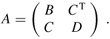

|
|
< Day Day Up > |
|
Although in practice we do not generally use matrix inverses to solve systems of linear equations, preferring instead to use more numerically stable techniques such as LUP decomposition, it is sometimes necessary to compute a matrix inverse. In this section, we show how LUP decomposition can be used to compute a matrix inverse. We also prove that matrix multiplication and computing the inverse of a matrix are equivalently hard problems, in that (subject to technical conditions) we can use an algorithm for one to solve the other in the same asymptotic running time. Thus, we can use Strassen's algorithm for matrix multiplication to invert a matrix. Indeed, Strassen's original paper was motivated by the problem of showing that a set of a linear equations could be solved more quickly than by the usual method.
Suppose that we have an LUP decomposition of a matrix A in the form of three matrices L, U , and P such that PA = LU. Using LUP-SOLVE, we can solve an equation of the form Ax = b in time Θ(n2). Since the LUP decomposition depends on A but not b, we can run LUP-SOLVE on a second set of equations of the form Ax = b' in additional time Θ(n2). In general, once we have the LUP decomposition of A, we can solve, in time Θ(kn2), k versions of the equation Ax = b that differ only in b.
The equation
can be viewed as a set of n distinct equations of the form Ax = b. These equations define the matrix X as the inverse of A. To be precise, let Xi denote the ith column of X, and recall that the unit vector ei is the ith column of In. Equation (28.24) can then be solved for X by using the LUP decomposition for A to solve each equation
separately for Xi. Each of the n columns Xi can be found in time Θ(n2), and so the computation of X from the LUP decomposition of A takes time Θ(n3). Since the LUP decomposition of A can be computed in time Θ(n3), the inverse A-1 of a matrix A can be determined in time Θ(n3).
We now show that the theoretical speedups obtained for matrix multiplication translate to speedups for matrix inversion. In fact, we prove something stronger: matrix inversion is equivalent to matrix multiplication, in the following sense. If M(n) denotes the time to multiply two n × n matrices, then there is a way to invert an n × n matrix in time O (M(n)). Moreover, if I (n) denotes the time to invert a nonsingular n × n matrix, then there is a way to multiply two n × n matrices in time O (I(n)). We prove these results as two separate theorems.
If we can invert an n × n matrix in time I (n), where I (n) = Ω (n2) and I (n) satisfies the regularity condition I (3n) = O(I (n)), then we can multiply two n ×n matrices in time O(I (n)).
Proof Let A and B be n × n matrices whose matrix product C we wish to compute. We define the 3n × 3n matrix D by
The inverse of D is
and thus we can compute the product AB by taking the upper right n × n submatrix of D-1.
We can construct matrix D in Θ(n2) = O(I (n)) time, and we can invert D in O(I (3n)) = O(I (n)) time, by the regularity condition on I(n). We thus have M(n) = O(I (n)).
Note that I (n) satisfies the regularity condition whenever I (n) = Θ(nc lgd n) for any constants c > 0 and d ≥ 0.
The proof that matrix inversion is no harder than matrix multiplication relies on some properties of symmetric positive-definite matrices that will be proved in Section 28.5.
Suppose we can multiply two n × n real matrices in time M(n), where M(n) = Ω(n2) and M(n) satisfies the two regularity conditions M(n + k) = O(M(n)) for any k in the range 0 ≤ k ≤ n and M(n/2) ≤ cM(n) for some constant c < 1/2. Then we can compute the inverse of any real nonsingular n × n matrix in time O(M(n)).
Proof We can assume that n is an exact power of 2, since we have
for any k > 0. Thus, by choosing k such that n + k is a power of 2, we enlarge the matrix to a size that is the next power of 2 and obtain the desired answer A-1 from the answer to the enlarged problem. The first regularity condition on M(n) ensures that this enlargement does not cause the running time to increase by more than a constant factor.
For the moment, let us assume that the n × n matrix A is symmetric and positive-definite. We partition A into four n/2 × n/2 submatrices:
| (28.25) |  |
Then, if we let
be the Schur complement of A with respect to B (we shall see more about this form of Schur complement in Section 28.5), we have
since AA-1 = In, as can be verified by performing the matrix multiplication. The matrices B-1 and S-1 exist if A is symmetric and positive-definite, by Lemmas 28.9, 28.10, and 28.11 in Section 28.5, because both B and S are symmetric and positive-definite. By Exercise 28.1-2, B-1CT = (C B-1)T and B-1CTS-1 = (S1C B-1)T. Equations (28.26) and (28.27) can therefore be used to specify a recursive algorithm involving four multiplications of n/2 × n/2 matrices:
C · B-1,
(C B-1) · CT,
S-1 · (C B-1),
Thus, we can invert an n × n symmetric positive-definite matrix by inverting two n/2 × n/2 matrices (B and S), performing these four multiplications of n/2 × n/2 matrices (which we can do with an algorithm for n × n matrices), plus an additional cost of O(n2) for extracting submatrices from A and performing a constant number of additions and subtractions on these n/2 × n/2 matrices. We get the recurrence
|
I (n) |
≤ |
2I(n/2) + 4M(n) + O(n2) |
|
= |
2I(n/2) + Θ (M(n)) |
|
|
= |
O(M(n)). |
The second line holds because M(n) = Ω(n2), and the third line follows because the second regularity condition in the statement of the theorem allows us to apply case 3 of the master theorem (Theorem 4.1).
It remains to prove that the asymptotic running time of matrix multiplication can be obtained for matrix inversion when A is invertible but not symmetric and positive-definite. The basic idea is that for any nonsingular matrix A, the matrix AT A is symmetric (by Exercise 28.1-2) and positive-definite (by Theorem 28.6). The trick, then, is to reduce the problem of inverting A to the problem of inverting AT A.
The reduction is based on the observation that when A is an n × n nonsingular matrix, we have
A-1 = (AT A)-1 AT,
since ((AT A)-1 AT)A = (AT A)-1(AT A) = In and a matrix inverse is unique. Therefore, we can compute A-1 by first multiplying AT by A to obtain AT A, then inverting the symmetric positive-definite matrix AT A using the above divide-and-conquer algorithm, and finally multiplying the result by AT. Each of these three steps takes O(M(n)) time, and thus any nonsingular matrix with real entries can be inverted in O(M(n)) time.
The proof of Theorem 28.8 suggests a means of solving the equation Ax = b by using LU decomposition without pivoting, so long as A is nonsingular. We multiply both sides of the equation by AT, yielding (AT A)x = ATb. This transformation doesn't affect the solution x, since AT is invertible, and so we can factor the symmetric positive-definite matrix AT A by computing an LU decomposition. We then use forward and back substitution to solve for x with the right-hand side ATb. Although this method is theoretically correct, in practice the procedure LUP-DECOMPOSITION works much better. LUP decomposition requires fewer arithmetic operations by a constant factor, and it has somewhat better numerical properties.
Let M(n) be the time to multiply n × n matrices, and let S(n) denote the time required to square an n × n matrix. Show that multiplying and squaring matrices have essentially the same difficulty: an M(n)-time matrix-multiplication algorithm implies an O(M(n))-time squaring algorithm, and an S(n)-time squaring algorithm implies an O(S(n))-time matrix-multiplication algorithm.
Let M(n) be the time to multiply n × n matrices, and let L(n) be the time to compute the LUP decomposition of an n × n matrix. Show that multiplying matrices and computing LUP decompositions of matrices have essentially the same difficulty: an M(n)-time matrix-multiplication algorithm implies an O(M(n))-time LUP-decomposition algorithm, and an L(n)-time LUP-decomposition algorithm implies an O(L(n))-time matrix-multiplication algorithm.
Let M(n) be the time to multiply n × n matrices, and let D(n) denote the time required to find the determinant of an n × n matrix. Show that multiplying matrices and computing the determinant have essentially the same difficulty: an M(n)-time matrix-multiplication algorithm implies an O(M(n))-time determinant algorithm, and a D(n)-time determinant algorithm implies an O(D(n))-time matrix-multiplication algorithm.
Let M(n) be the time to multiply n × n boolean matrices, and let T (n) be the time to find the transitive closure of n × n boolean matrices. (See Section 25.2.) Show that an M(n)-time boolean matrix-multiplication algorithm implies an O(M(n) lg n)-time transitive-closure algorithm, and a T (n)-time transitive-closure algorithm implies an O(T (n))-time boolean matrix-multiplication algorithm.
Does the matrix-inversion algorithm based on Theorem 28.8 work when matrix elements are drawn from the field of integers modulo 2? Explain.
Generalize the matrix-inversion algorithm of Theorem 28.8 to handle matrices of complex numbers, and prove that your generalization works correctly. (Hint: Instead of the transpose of A, use the conjugate transpose A*, which is obtained from the transpose of A by replacing every entry with its complex conjugate. Instead of symmetric matrices, consider Hermitian matrices, which are matrices A such that A = A*.)
|
|
< Day Day Up > |
|